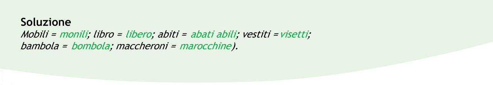

Non scartiamoli
Puoi riutilizzare in cucina i sacchetti del pane per assorbire
l'unto delle tue fritture; la carta dei quotidiani
può servire per pulire specchi e vetri; puoi usare il retro
di un foglio che non ti serve più per prendere appunti.
Mettiamoci una pezza
Da vecchie camicie puoi ricavare stracci per pulire;
per lucidare l'argenteria.
Riponi una vecchia maglietta, non lavata, nella
cuccia del tuo cane: gli farà sentire meno la tua mancanza!
Non buttare la pasta
È avanzato un piatto di spaghetti? Puoi trasformarlo
in una torta salata, una frittata, un timballo. Aggiungi
qualche ingrediente e la magia è fatta!
